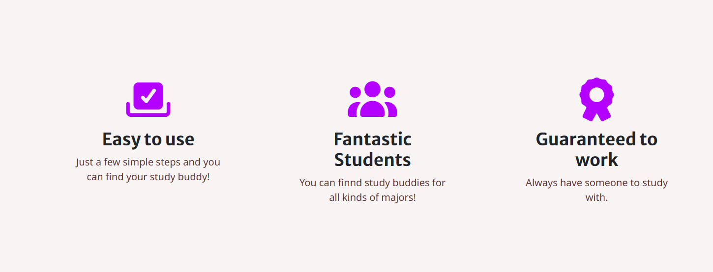
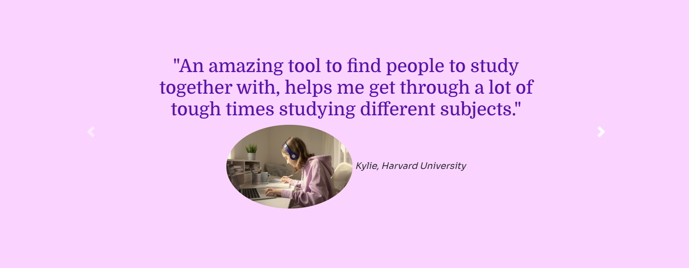
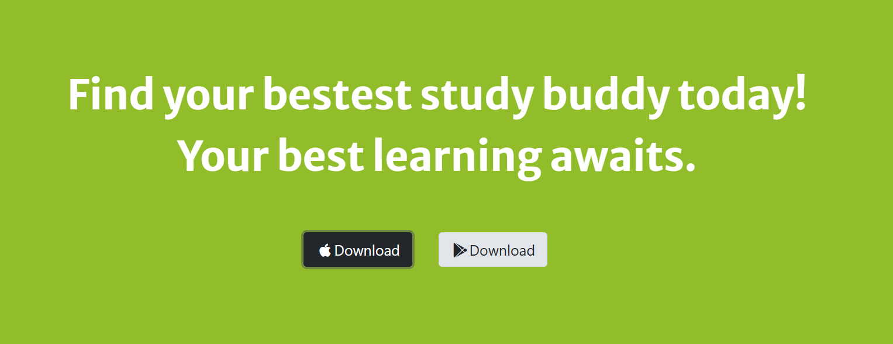
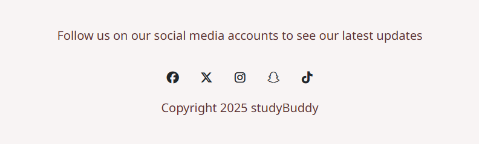

This is the website for the StuddyBuddy app that I made for my COGS 3 class. The website is the studyBuddy app's website, which helps students find study buddy to study together.
For the website, I followed the instructions from the class to build the basic structure and function of the website, and I cumtomized the fonts, images, testimonials, as well as the colors and icons on the webiste to make it more unique and also more up to date.
 The features and tetimonials sections of the website, whichn includes different icons related to the features and images that combines with different user's feedback for the app.
Logos of other realetd brands/sites that adds to the reliability of the app.
The pricing section showing the different plans for buying the app's servies.
The call to action section of the website, prompting the viewer to download the app.
The social media logos/links at the very bottom of the website for the app, I added TikTok and Snapchat for the app's social media to be more up to date with students today.